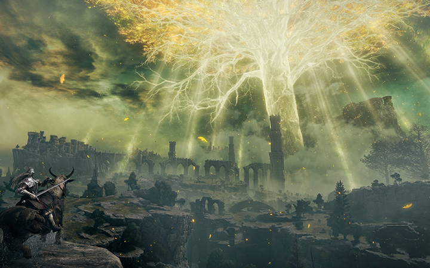
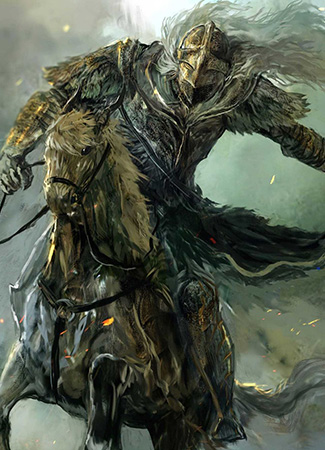

main content
About
Rise, Tarnished, and be guided by grace to brandish the power of the Elden Ring and become an Elden Lord in the Lands Between. In the Lands Between ruled by Queen Marika the Eternal, the Elden Ring, the source of the Erdtree, has been shattered. Marika's offspring, demigods all, claimed the shards of the Elden Ring known as the Great Runes, and the mad taint of their newfound strength triggered a war: The Shattering. A war that meant abandonment by the Greater Will.
more- 
- 
Trailer
-

-
- Tarnished of the Lands Between
- The Golden Order has been shattered. Throughout the Lands Between, Demigods holding shards of the Elden Ring squabble and make war over the ruins of a perfect realm, now abandoned by the golden guidance of the Greater Will. ensconced in vast legacies bristling with traps, secrets, and guardians, the Demigods warped Lords who began as members of a royal and noble family rule their domains with the unyielding power granted by shards of the Elden Ring.

The guidance of lost graces should you find them - will put you on a road to re-take these lands from the Demigods through might and magic, but you need not follow their path.
The choice is yours. Do you crave power, or do you seek understanding? Decide for yourself, then build your character as you see fit.
Try dozens of skills and find one to best suit your style. Practice stealth to avoid danger or catch enemies unaware. Use the environment, the weather, and the time of day to gain an advantage. Learn the art of combat , where you must read your enemy’s intentions and a well-timed dodge or parry could be the difference between life and death. Ride your steed into battle against mounted mercenaries and cut them from their horses. Master arcane spells from the masters that still linger among the ruins of the war. Summon familiar spirits to even the odds against you or call on your fellow Tarnished to fight at your side and share the burden as you explore. Or, delve into the complex, bloody history of the Shattering and discover the lost secrets of the Demigods and their kin. All these paths are possible, and more.
Ultimately, your journey will be defined by the strength of your own ambition. The greater your goals, the greater the challenge will be. Should you choose to claim the Lands Between as your birthright then yes, you must fight.
And yes, you may die.
But you will return to fight again.
For that is how a champion or a Lord is born.
Gallery
ELDEN RING features vast fantastical landscapes and shadowy, complex dungeons that are connected seamlessly. Traverse the breathtaking world on foot or on horseback, alone or online with other players, and fully immerse yourself in the grassy plains, suffocating swamps, spiraling mountains, foreboding castles and other sites of grandeur on a scale never seen before in a FromSoftware title.